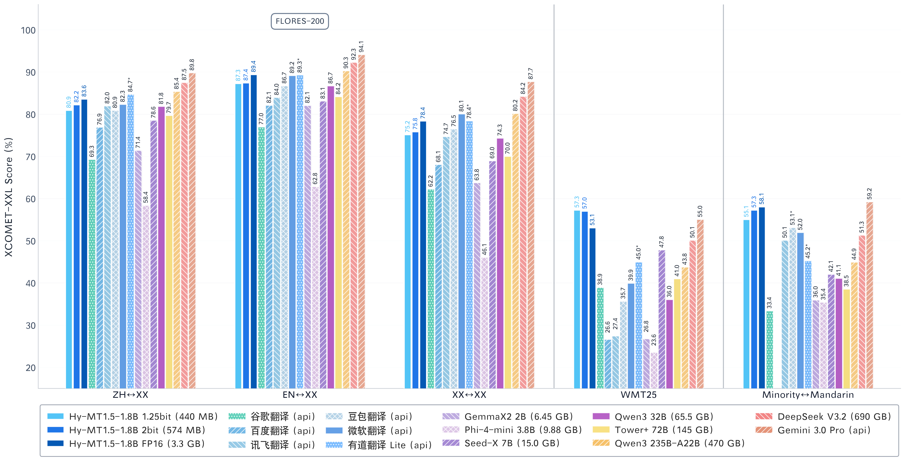
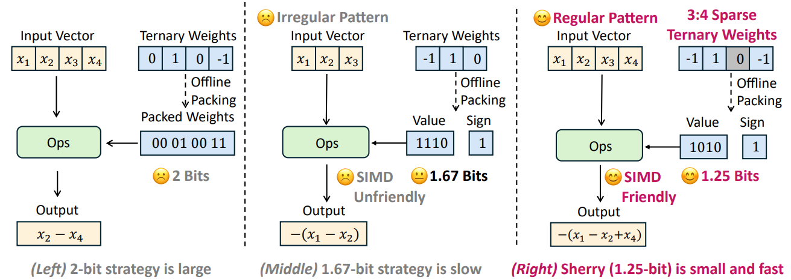
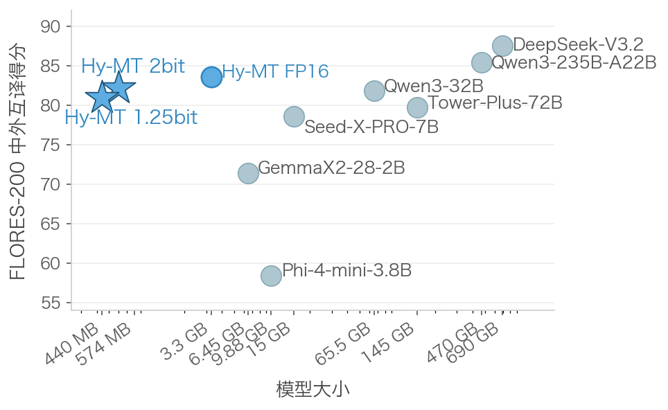
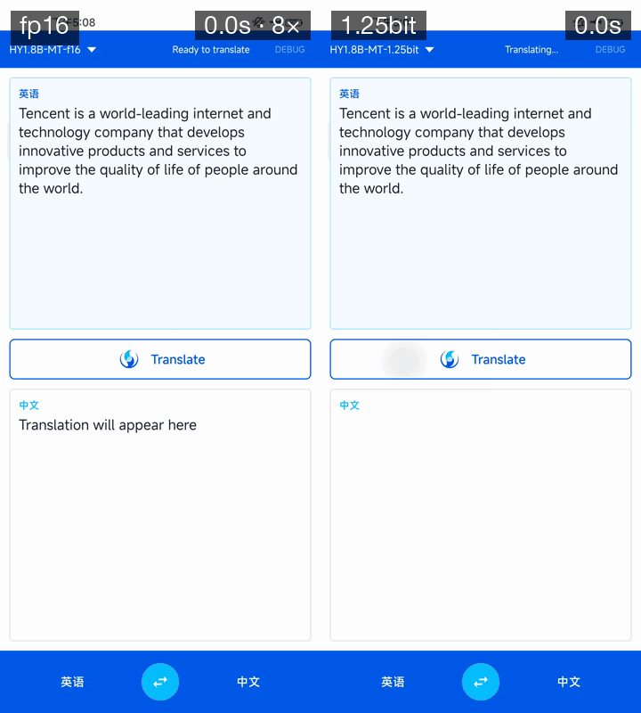
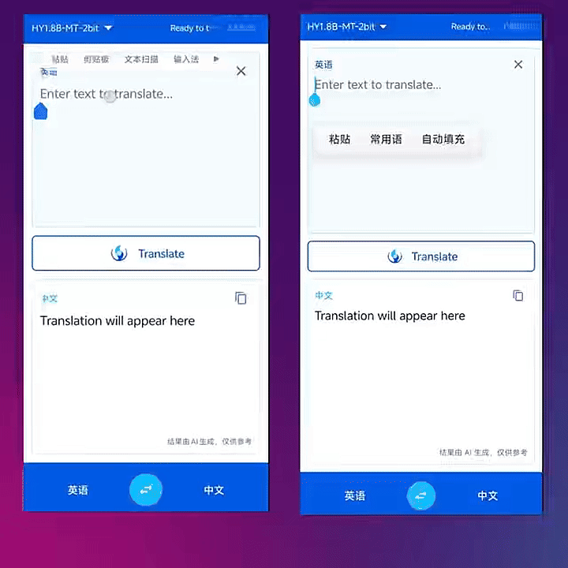
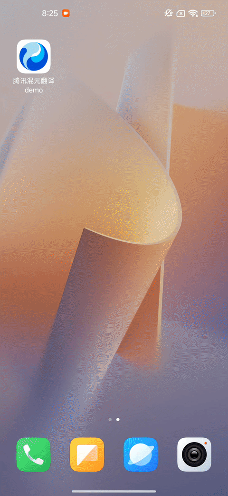
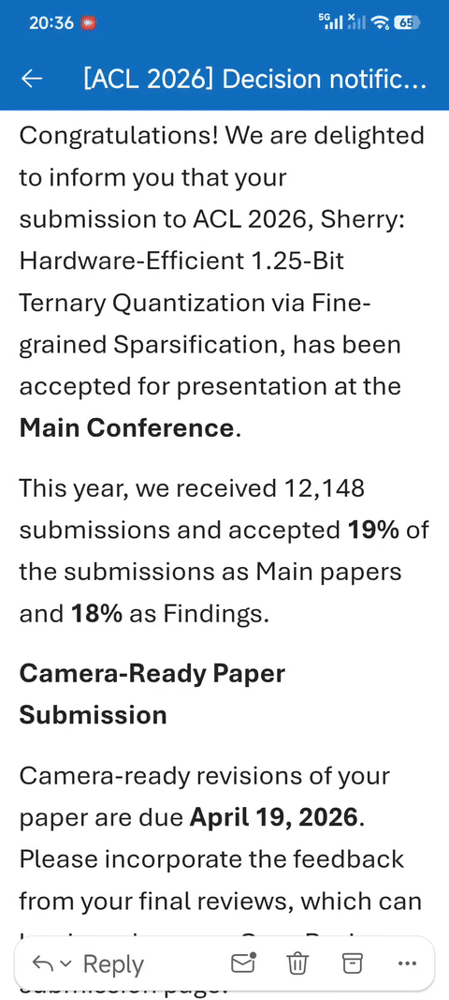

Hy-MT1.5 量化#
{kind=link}

Hy-MT1.5-1.8B translation quality scores. Source: HY-MT1.5 Technical Report#
🌟 Key Features#
World-Class Translation Quality#
Both Hy-MT1.5-1.8B-1.25bit and Hy-MT1.5-1.8B-2bit are built upon the Hy-MT1.5-1.8B foundation model, a specialized translation model developed by Tencent Hunyuan Team through a holistic multi-stage training pipeline integrating MT-oriented pre-training, supervised fine-tuning, on-policy distillation, and reinforcement learning. The base model natively supports 33 languages, 5 dialects/minority languages, and 1,056 translation directions. With only 1.8B parameters, it comprehensively outperforms much larger open-source models (e.g., Tower-Plus-72B, Qwen3-32B) and mainstream commercial translation APIs (e.g., Microsoft Translator, Doubao Translator). For full details, please refer to the HY-MT1.5 Technical Report.
Sherry: Extreme 1.25-bit Quantization (440MB)#
The 1.25-bit model employs Sherry (accepted at ACL 2026), a hardware-efficient ternary quantization framework. Sherry introduces a 3:4 fine-grained sparsity strategy: for every 4 model weights, the 3 most important are stored in 1-bit ({-1, +1}), while the remaining 1 is zeroed out. This packs 4 weights into just 5 bits, achieving an effective 1.25-bit width with power-of-two alignment, compressing the original 3.3GB FP16 model to just 440MB, with minimal accuracy loss.
{kind=link}

Sherry fine-grained sparsity: for every 4 weights, the 3 most important are stored in 1-bit, and the remaining 1 is zeroed out.#
Paired with our custom STQ kernel designed specifically for mobile CPUs, the 1.25-bit model achieves perfect SIMD instruction set alignment. This means even ordinary phones with limited memory can run high-quality offline translation smoothly. No internet connection required, and your data never leaves the device.
Ultra-Compact 2-bit Quantization (574MB)#
The 2-bit model employs industry-leading Stretched Elastic Quantization (SEQ) to quantize model weights to {-1.5, -0.5, 0.5, 1.5}, combined with quantization-aware distillation. This compresses the original 3.3GB FP16 model down to just 574MB while maintaining near-lossless translation quality that surpasses models hundreds of GBs in size. The quantization details are described in the AngelSlim Technical Report.
Optimized for Arm SME2-capable mobile devices (e.g., Apple M4, vivo x300), the 2-bit model enables fast, fully offline translation directly on your phone — no internet connection required. Your data never leaves the device, ensuring complete privacy.
📈 Translation Benchmarks#
Performance comparison of different model sizes on the Flores-200 Chinese-Foreign mutual translation benchmark:
{kind=link}

Performance of different model sizes on the Flores-200 Chinese-Foreign mutual translation benchmark.#
⚡ Speed Demos#
1.25-bit: FP16 (8x speed) vs. 1.25-bit#
{kind=link}

Demo device: Snapdragon 888, 8GB RAM.#
2-bit: SME2 vs. Neon Kernels#
{kind=link}

Speed comparison of the 2-bit model on SME2 and Neon kernels.#
📱 Demo#
We provide a ready-to-use Android demo APK for offline translation. The app features a background word extraction mode that works across any app on your phone — browse emails, webpages, or chat messages and get instant translations without switching apps. No network required, no data collection, one-time download for permanent use.
Download Demo:
https://huggingface.co/AngelSlim/Hy-MT1.5-1.8B-1.25bit-GGUF/resolve/main/Hy-MT-demo.apk
Translation Demo#
{kind=link}

Demo device: Snapdragon 865, 8GB RAM.#
Background Word Extraction Mode#
{kind=link}

Demo device: Snapdragon 7+ Gen 2, 16GB RAM.#
💻 Deployment#
Clone llama.cpp#
git clone https://github.com/ggml-org/llama.cpp.git
Enter the llama.cpp folder#
cd llama.cpp
Fetch and check out the PR branch#
git fetch origin pull/22836/head:pr-22836-stq_0
git checkout pr-22836-stq_0
Build llama.cpp#
pip install -r requirements.txt
cmake -B build
cmake --build build --config Release
Download the HF model#
pip install huggingface_hub
huggingface-cli download AngelSlim/Hy-MT1.5-1.8B-1.25bit \
--local-dir model_zoo/Hy-MT1.5-1.8B-1.25bit
Convert HF → bf16 GGUF#
python convert_hf_to_gguf.py model_zoo/Hy-MT1.5-1.8B-1.25bit \
--outfile model_zoo/Hy-MT1.5-1.8B-bf16.gguf \
--outtype bf16
Quantize bf16 → STQ1_0#
./build/bin/llama-quantize \
model_zoo/Hy-MT1.5-1.8B-bf16.gguf \
model_zoo/Hy-MT1.5-1.8B-STQ1_0.gguf \
STQ1_0
Run a completion example#
The prompt format can be viewed at HY-MT1.5-1.8B
./build/bin/llama-completion \
--model model_zoo/Hy-MT1.5-1.8B-STQ1_0.gguf \
-p "Translate the following segment into Chinese, without additional explanation. Hello " \
--jinja \
-ngl 0 \
-n 64 -st
Run the llama.cpp benchmark#
./build/bin/llama-bench -m model_zoo/Hy-MT1.5-1.8B-STQ1_0.gguf -ngl 0
📥 Download Links#
1.25-bit model weights: https://huggingface.co/AngelSlim/Hy-MT1.5-1.8B-1.25bit
1.25-bit model GGUF: https://huggingface.co/AngelSlim/Hy-MT1.5-1.8B-1.25bit-GGUF
2-bit model weights: https://huggingface.co/AngelSlim/Hy-MT1.5-1.8B-2bit
2-bit model GGUF: https://huggingface.co/AngelSlim/Hy-MT1.5-1.8B-2bit-GGUF
Demo: https://huggingface.co/AngelSlim/Hy-MT1.5-1.8B-1.25bit-GGUF/resolve/main/Hy-MT-demo.apk
📄 Technical Reports#
HY-MT1.5 Technical Report: https://arxiv.org/abs/2512.24092
Sherry Paper (ACL 2026): https://arxiv.org/abs/2601.07892
AngelSlim Technical Report: https://arxiv.org/abs/2602.21233
📝 License#
The code for this project is open-sourced under the License for AngelSlim.
🔗 Citation#
@misc{huang2026sherry,
title={Sherry: Hardware-Efficient 1.25-Bit Ternary Quantization via Fine-grained Sparsification},
author={Hong Huang and Decheng Wu and Qiangqiang Hu and Guanghua Yu and Jinhai Yang and Jianchen Zhu and Xue Liu and Dapeng Wu},
year={2026},
eprint={2601.07892},
archivePrefix={arXiv},
primaryClass={cs.LG},
url={https://arxiv.org/abs/2601.07892},
}
@article{angelslim2026,
title={AngelSlim: A more accessible, comprehensive, and efficient toolkit for large model compression},
author={Hunyuan AI Infra Team},
journal={arXiv preprint arXiv:2602.21233},
year={2026}
}
@misc{zheng2025hymt,
title={HY-MT1.5 Technical Report},
author={Mao Zheng and Zheng Li and Tao Chen and Mingyang Song and Di Wang},
year={2025},
eprint={2512.24092},
archivePrefix={arXiv},
primaryClass={cs.CL},
url={https://arxiv.org/abs/2512.24092},
}
💬 Technical Discussion#
AngelSlim is continuously iterating and new features will be released soon. If you have any questions or suggestions, please open an issue on GitHub Issues or join our WeChat discussion group.
{kind=link}